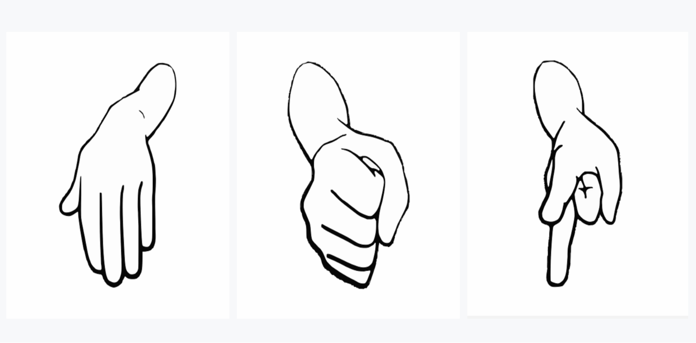
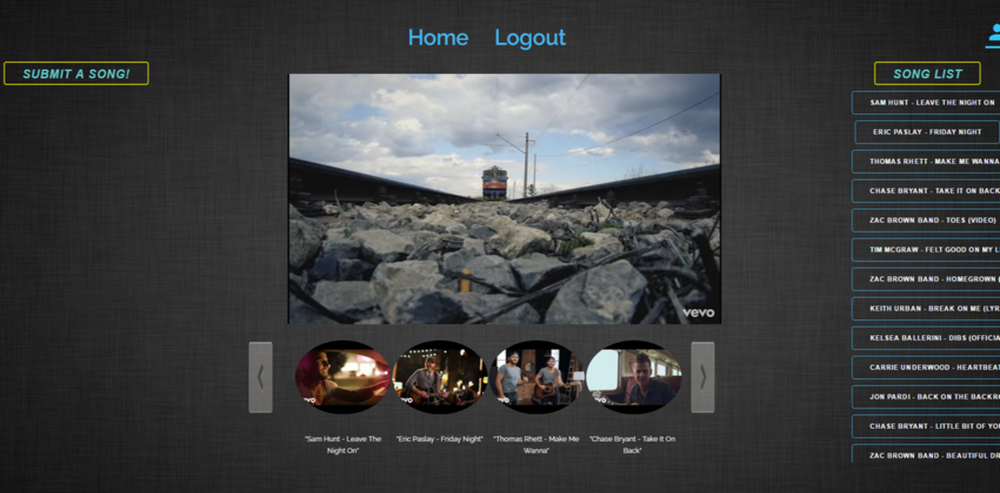

I’m from a small farming community where I spent my summers
working on our family fruit orchard. There's a joke that goes
like this, “Do you know how to make a small fortune farming?
Start out with a large fortune!” That’s because being
a farmer is hard work and depending on the year it doesn’t
always pay off. On a farm you are always trying to find the most efficient use of
resources and figuring out how to fix broken equipment. I believe
this is where my ingenuity and strong work ethic came from.
I spent my winters at the ski resort 30 minutes from my
home working as a ski and snowboard instructor. People from across the globe
come to Mt. Hood to work or to recreate, so I interacted
with people having all different personalities,
temperaments and cultural backgrounds.
I’ve always been an active individual and throughout
my younger years I was a wrestler and a football player. It was
there that I learned the value of team. My experience
was further enhanced as the team captain where I acquired an
understanding of the importance of strong leadership and
personal sacrifice for the sake of the greater good.
I stumbled upon technology when I took a StRUT (Student
use of Recycled Technology) class in high school. This class was
more hardware based than software and mainly consisted of
tinkering with Arduinos and dismantling broken computers.
I became enlightened to what technology can do for people.
I began researching career paths that involve technology.
After exploring all options, I knew that I belonged in the
Computer Science field. The fact that in Computer Science
I can design, create, be the mastermind behind a solution
that impacts people’s lives and really see it come to life
excites me!
I’m in my final year now at Oregon State University
and have been loving every bit of it. I have taken advantage of every
opportunity I have encountered here at OSU and have
been fortunate enough to be a part of the Engineering Leadership
Academy and Oregon State’s ACM Student Chapter.
Education
Here is a look at my schooling thus far.
Undergraduate
Major
Computer Science
GPA
3.84
Expected Graduation
December 2018
Completed Coursework
Analysis of Algorithms
Data Structures
Software Engineering 1 & 2
Operating Systems 1 & 2
Databases
Theory of Computation
Physics I, II, & III
Calculus I, II, & III
Completed Coursework By Graduation
Machine Learning and Data Mining
Intro to Computer Networks
Translators
Intro to AI
Cloud and Mobile Development
My Experience
Take a look at my work experience.
Autodesk
Summer 2017 San Francisco, CA
As a member of the Digital Manufacturing Group Cloud Services team,
I worked on the Form Builder for Autodesk's Manufacturing Data Service
The Leadership Academy helps develop
engineer's Leadership and interpersonal skills
New grads may be technically sound, but when it comes to
leadership and people skills many are falling short. The
Engineering Leadership Academy was developed by Scott Paja
and Industry partners to address that problem. The program
holds workshops for academy members hosted by successful
industry leaders who share their perspective on leadership
development, communication skills, work ethic, and ultimately
what it takes to be an effective leader.
I encourage you to learn more about the Leadership academy
by exploring their site.
Leadership Academy
Check out pictures from our trip to Amazon, Boeing, Microsoft,
and McKinstry in Seattle.
Seattle Pictures
Quack Hacks
Developed a 2-D top down shooter game
during a three day hackathon
118 college students participated from 6 states (OR, WA, CA, CO, IN, MA),
14 universities and representing 16 different majors. Over 100+ high school
students, community & business leaders engaged in our weekend-long event.
quakhack.io
Quack Hacks was a three day gaming hackathon that was hosted by the
University of Oregon. I was part of a five-person team that designed and implemented a
marketable 2-D top down shooter game.
One-Time-Pad Encryption
Implemented a client-server OTP encryption service
I created five small programs responsible for encrypting and decrypting text.
The programs emulate a client-server architecture where the encrypt program connects to the
decrypt program via network sockets. When the encrypt program is
sent plaintext it generates a random key using the standard UNIX randomization methods to
encrypt the plaintext. When the encryption is done it sends back the ciphertext to the caller.
When the decrypt program is sent ciphertext and the generated key it returns the decrypted plaintext.
Food Delivery Site
Created a mini Yelp for Corvallis restaurants that deliver
As part of a two person team I built a website that lists all
currently open Corvallis restaurants and their information if they deliver. Once a user creates an
account and logs in they can scroll through the restaurant cards to look at photos of meals,
read reviews, rate dishes, upload photos of their meals, and leave reviews
for restaurants. All data is stored in a MySQL database that I designed.
Rock, Paper, Scissors
Created a Rock, Paper, Scissors
game with computer intelligence

Utilized file I/O in a C++ OOP Rock, Paper, Scissors project
where the computer has a predictive capabilities. The user plays
Rock, Paper, Scissors against the computer, with the user's move
being outputted to a text file. The computer gets smarter
as the game progresses by predicting the user’s next moved
based on the analysis of previous patterns.
Sound Tunnel
Created a mini YouTube from scratch
with a team of five

As part of a five-person team I built a mini YouTube - Sound Tunnel.
Logged in users can choose a genre which is represented by a circle that grows
according to popularity. That choice takes them to a similar set of sub-genres.
Once a genre and sub-genre are chosen users can scroll through the thumbnail slider
or the song list to choose a music video to view. The site also gives users the
ability to upload new videos.
This was my first real programming project. Being naive freshman, we built this
site completely from scratch. Meaning no Bootstrap or other styling packages, no external
libraries installed, no task runners, and even no version control system!
Form Builder
Worked on creating an
onboarding form for Autodesk's Manufacturing Data Service
Disclaimer: The Manufacturing Data Service
(MDS) is much more than described below.
I’m solely stating pieces of it to give
context to my contributions.
The current way internal Autodesk teams and Autodesk
partners are saving materials and machine data has
some problems. To upload this data, they must manually
create a library and outline what structure the data
must follow to be uploaded into the library. Once the
library is created they need to structure their data
to match the schema specified by the library. Then they
write code to upload it to their newly created library.
As you might have guessed, users need to be technically
savvy to do this.
Another problem that arises is the lack of versioning
and access control. For example, imagine team A creates
library "Steel" and for the next three years they add new
facets to it. Then team B comes along and wants to utilize
a portion of that library. To do that team B would have to
import team A’s entire "Steel" library, even if they don’t
need all the newly added facets. Not to mention every
additional facet team B adds to "Steel" would affect all
other teams utilizing that same library since they're
pulling from the same place. That’s where the Manufacturing
Data Service (MDS) comes in.
MDS solves these problems by creating versioning and access
control so each team can maintain their own library while still
making a global registry for other teams to pick and choose what
they would like from it. MDS also has a feature that allows for
queries such as "I'm trying to 3-D print a part with this
constraint. Give me a machine and material that would be
able to do this for me." This tremendously boosts efficiency
for internal teams and creates a mini marketplace for external
partners that have uploaded their data. MDS also solves the
obstacle of needing to be technically savvy and knowing what
JSON schema is! This is solved by the Form Builder, which is
where I spent my time.
Form Builder is a web application that allows a user to create
a data onboarding form through a quick and easy user interface.
The form creator simply chooses which schemas/libraries they
would like to import, selects the required and optional questions
from those imports, arranges the questions, blocks, and tabs in
the order they want them in, and optionally chooses input
restrictions. Once that is all said and done- voila the form is
created. Now the form creator can invite team members or clients
to the form and start uploading data to MDS by simply filling
out the form!
I was in charge of…
Form validation for the entire Form Builder application – form creator view and end user view
Designing schema for saving property panel data
Developing the execution of display logic on the end user view
Implementing the form creator view Property Panel
The Property Panel is a side panel that supports the following functionality...
List information about form fields that are clicked on
Change question types such as checkbox, radio, file upload etc.
Add input restrictions such as max-length, file formats, number of choices selected, etc.
Add help content such as tool tips
Add Display Logic
Display logic gives the form creator the ability to add logic
to a question like “If answer A is chosen then hide tab 2
and show question 5.”
Project Prospector
Using archived designs similar in shape to
automatically run simulations behind the scenes
At Autodesk, I worked in the Strategy and Research department under Patti Vrobel,
Distinguished Research Engineer. We tackled a thin vertical into the idea of
the computer as a collaborator as it applies to simulation.
In the mechanical realm before designs can be manufactured and
turned into products, they must first be simulated to assure
the design meets the product's requirements. However,
unless they are familiar with
that product’s mechanics, they don’t know how to correctly
set up the constraints and loads. Even if they get the
constraints and loads set correctly most won’t know how
to interpret the results. Because of this, many times
minor designs are shipped off to the simulation analyst
to be professionally tested. The simulation analyst will
run the simulation, interpret the results, and then send
the design back to the designer with critiques. Involving
a simulation analyst often creates a bottleneck in process
design. Not to mention, for minor designs this is a waste
of company resources as the simulation analyst should be
applying their knowledge to more complex designs.
In collaboration with Patti Vrobel and my team at Autodesk,
I designed and implemented a working prototype, Project Prospector,
that runs in Autodesk’s Fusion 360 and attempts to solve this
problem. Prospector automatically sets up and runs simulation
in the background while the user is designing.
Here's a high level overview of how Prospector works. The user is
designing in Fusion 360. Behind the scenes Prospector scans
their design, queries Design Graph (Autodesk's similarity tool)
for similar parts and downloads
them. Prospector then scans those files for past simulation studies
and uses that info to automatically setup and run the simulation on
the current design in the background. Imagine a chair being designed
in Fusion 360. Prospector takes a snapshot of the design, ships it off
to Design Graph which returns similar looking chairs. Those similar
chairs are then mined for past simulation studies. Let’s say that
Prospector came back and found that ChairSim1 was the best choice
for the user's design. Then Prospector would prepare the user’s chair
design for simulation using the info from ChairSim1. Once the simulation
is done it is then shown to the designer. All of this is done behind the
scene without user interaction.
This project espoused the idea of computer as collaborator in the simulation
realm. In the future, if we could filter the simulation’s contours
to something that is easier for the designer to understand, we could
increase a company’s productivity tremendously by cutting off the
simulation analyst bottleneck. By shortening the time to manufacture,
products get to market faster, increasing company revenues. Prospector
allows the designer to design, the simulation analyst to simulate complex
designs, and the computer to be used to its full advantage. By the end of the
internship we had an awesome working prototype acting as a spark to kindle the
innovation behind the computer as a collaborator, opening the eyes of many.
Teaching Assistant
Helped students succeed
in their introductory computer science classes
As a teaching assistant I taught labs and hosted recitations
where I helped students understand fundamental programming
concepts. Twice a week I held office hours where I helped students
with questions regarding concepts covered in class, errors in their code, and
design choices. I regularly met with the professor and other TAs
to collaboratively discuss improvements to the curriculum and
what could be done to better the students' learning.